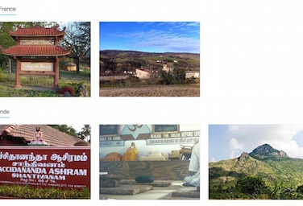
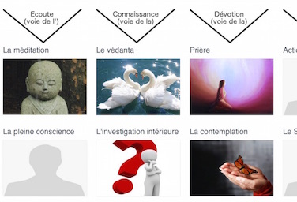
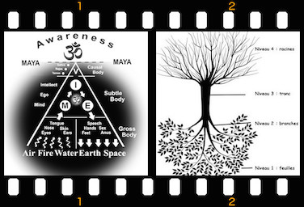
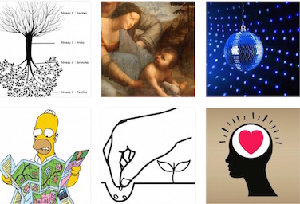
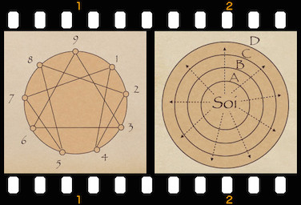
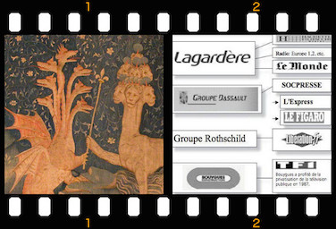
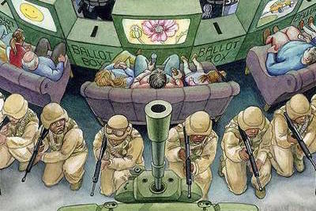

Je suis lumière ...
Tu es lumière ...
Nous sommes lumière ...
Tout est lumière ...
Des ressources de lieux de pratique, de maîtres spirituels authentiques, d'auteurs, d'artistes, etc
- Tout
- Spiritualité
- Psychologie
- Société
-
Maîtres spirituels
des temps passés et du temps présent
-

Lieux de retraite et de pratique
toutes traditions confondues.
-

Approches spirituelles
toutes traditions confondues
-

Les cartes spirituelles
Pour appréhender la Vérité.
-

Images spirituelles
pour intégrer des aspects de la Vérité
-
 Histoires spirituelles
Histoires spirituelles
pour intégrer des aspects de la Vérité
-
Logiciels
Pour nous assister dans notre vie
-
Films
Pour nous inspirer
-
Maîtres de la psychologie
des temps passés et du temps présent
-
Approches psycho-spirituelles
toutes traditions confondues
-
Images psychologiques
Des images pour intégrer
-

Les cartes psychologiques
Pour appréhender la vie psychologique.
-
Auteurs
des temps passés et du temps présent
-
Approches sociétales
toutes orientations confondues
-

Les cartes sociétales
Pour naviguer dans la vie en société
-
Livres révolutionnaires
pour donner une nouvelle vision
-
Sites internet
pour donner une nouvelle vision
Des articles sur les thèmes de la recherche de la vérité et de la tranformation de la société
-

Démoquerie
Nos régimes politiques sont dits démocratiques. C'est une dé-moquerie. Un peu de démo-critique : À chaque élection, nous élisons nos dirigeants politiques pour une durée parfois supérieure à 5 ans. Entre temps, il n'existe aucun moyen réel pour le peuple d'agir pour que les élus tiennent leurs promesses.
Lire la suite -
Les résilients
Je fais partie de ces gens que l’on nomme les résiliants. La société produits beaucoup d’êtres profondément blessés, souvent qui s’ignorent ou qui veulent s’ignorer.
Lire la suite -
Mon coeur saigne
Mon coeur saigne / Profanation quotidienne / Fermes usines / Animaux objets / Parqués, transportés, dépecés / Vie profanée / Paysages bétonnés / Entreprises mercenaires / Course au profit / Hommes machines / Employés jetables / Hommes d’affaires sans pitié / Perdre sa vie à la gagner / Société robotisée / Toujours plus, plus vite / Spirale infernale / Corps et esprit dissociés / Coeurs handicapés
Lire la suite -
Salaam aleikoum - Que la Paix soit avec toi
Que lorsque vous voyez un homme ou une femme portant les signes de la religion de l'Islam, vous puissiez lui dire "Salam alekoum », Que la Paix soit avec toi
Lire la suite -
Quand la tempête est là
Quand la tempête est là...Courage ! Surtout ne remue pas. Ferme les volets de ta maison intérieure. Et assied toi ou marche très lentement. Comme dans un verre d'eau boueuse, laisse la boue se déposer au fond, doucement, petit a petit. Reviens a tes sensations pour que le flot tumultueux de tes pensées se calme
Lire la suite -
Pour la laïque spirituelle
Laïque spirituelle : ces termes mis ensemble peuvent surprendre. Jean Jaurès ferait pourtant sans doute remarquer le pléonasme. En effet, lorsque je relis son ouvrage Pour la Laïque, 1892, sa vision de la laïcité semble tout emprunte de spiritualité essentielle et incarnée. Que s’est-il donc passé pour qu’aujourd’hui, dans l'acception commune du mot laïcité, la dimension spirituelle aie disparue ?
Lire la suite -

Le système politico-médiatique actuel et notre responsabilité dans le monde
Cette illustration est révélatrice du système politico-médiatique actuel. Si nous acceptons de nous laisser distraire, de fermer les yeux, nous élisons des homme d’affaires qui pillent les populations du monde en notre nom.
Lire la suite

A propos de l'auteur

2016 © Tout est Lumière. Copyleft.